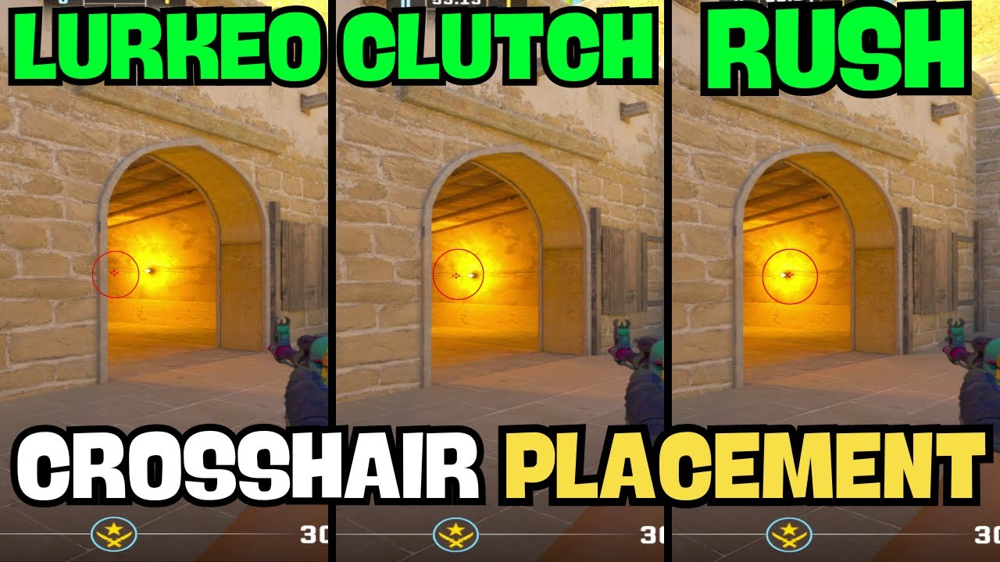

Master positioning your aim for faster reaction time and consistent headshots
Crosshair placement is one of the most fundamental mechanics in Counter-Strike 2. It refers to keeping your aim (crosshair) at the exact height and position where enemies are most likely to appear — typically at head level. Proper crosshair placement allows you to react faster and land instant headshots without needing to adjust your aim vertically.
In a game where milliseconds decide who wins a duel, good crosshair placement gives you the advantage of reaction time. Instead of flicking your mouse to the enemy’s head, your crosshair is already there, ready to shoot the moment they appear.
Correct head-level crosshair alignment around corners
Every professional player in CS2 has near-perfect crosshair placement. It’s not flashy — but it’s the secret behind consistent headshots and fast kills. Bad aim can be improved with practice, but poor crosshair placement limits your potential at any skill level.
The core idea is simple: always keep your crosshair at head level and aim where enemies will appear. This transforms aiming from a reaction into a pre-planned action.
Always maintain your crosshair at the approximate height of an enemy’s head, regardless of your position on the map. This eliminates vertical adjustment when you encounter an opponent.
Keep your crosshair aimed at likely enemy spots — corners, common angles, and choke points — before they appear. This lets you “peek” ready to fire instantly.
Beginners often keep their crosshair too low, aiming at the chest or legs. Always align at head height — headshots win fights instantly.
If you need to move your crosshair up when seeing an enemy, you’re already too late. The goal is to eliminate vertical correction.
Don’t let your crosshair wander. As you move through maps, always align it with typical enemy positions and cover spots.
Enemies can be on stairs, ramps, or boxes. Adjust head height dynamically to match elevation changes.
Pre-aim at the enemy’s head before you expose yourself. As you strafe out, your crosshair should already be on target — no mouse movement needed.
Keep your crosshair exactly where an enemy’s head would appear from cover. Don’t aim too wide or too tight — align with the edge of the wall.
Good crosshair placement comes from map knowledge. You must learn where enemies typically stand and how to pre-aim those locations. As you get more familiar with each map, your crosshair naturally moves to those spots.
Once your crosshair placement is consistent, start pre-firing common positions. This combines accuracy and prediction to catch opponents off guard.
Adjust your crosshair mid-fight as you move. Anticipate enemy repositioning and pre-aim their possible new locations.
Use proper crosshair placement alongside teammate callouts — pre-aim based on enemy positions communicated by your team.
Perfect crosshair placement turns aiming into predicting. You’re not reacting — you’re already prepared. Combine it with movement control and game sense, and your performance will skyrocket. Like all CS2 fundamentals, it’s built on discipline and repetition.